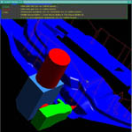
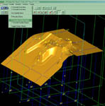
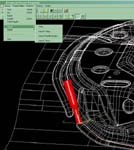

|
TurkCADCAM
üyesi olan Tamer Yýldýrgan, 1 Mayýs 2003'de Türkiye'de eþine
pek rastlanmayan takdire deðer çalýþmlarýný þu cümlelerle
gruba bildirmiþtir: "CAD/CAM konularýnda yazýlým geliþtiriyorum.
Katý modelleme, simulasyon, hareket analizleri ve CAM konularýnda
isteðe özel, sizin belirleyeceðiniz kriterlere uygun görsel
programlar yazabilirim. Þu ana kadar geliþtirdiðim 3 adet
CAM programým var. IGES ve STEP dosyalarý ile çalýþýyorum.
Ýlgili kiþileri geliþtirmiþ olduðum programlar konusunda bilgilendirebilirim."
Mak.
Yük. Müh. Tamer Yýldýrgan'a ait 3 adet CAM modülüne ait bilgiler
aþaðýda bulunmaktadýr. Daha fazla bilgi için cadcamyzl@yahoo.com
adresinden kendisiyle irtibata geçilebilir. Tamer Yýldýrgan
Ford-Otosan'da çalýþmaktadýr.
LAZER5
Lazer Kesme Programý:
Lazer5 lazer kesme simulasyon programý lazer tezgahýna (Prima
Rapido) beþ eksen post dosyasý üretmesi amacýyla yazýlmýþtýr.
Bu sayede lazer kesmeye baðlý çok önemli zaman kayýplarýnýn
azaltýlmasý düþünülmüþtür. Lazer tezgahýndaki kafa hareketinin
bilgisayar üzerinde simule edilmesi, parça tezgaha yerleþtirilip
iþlenmeye baþlamadan önce hatalarýn tespit edilip düzeltilmesine
imkan verir. Programda lazer tezgahýndaki kafanýn ani dönmesi
simulasyon sýrasýnda görülmekte ve kullanýcýya gerekli açý
ve koordinatlarýn "edit" edilebilmesi imkaný saðlanmaktadýr.
Ýleri düzey grafik programlama tekniði ile yazýlan program
unix ve Microsoft tabanlý iþletim sistemlerinde çalýþabilmektedir.
Teknik
Özellikler:
Programýn çalýþabilmesi için ekran kartýnýn openGL'i desteklemesi
gerekmektedir. Lazer kafasýnýn yüzey üzerindeki hareketi ve
simulasyon sýrasýnda ani dönmeleri görülebilir. Çarpma veya
aþýrý dönme olan yerlerde açýlar ve koordinatlar çarpma ve
aþýrý dönmeyi engelleyecek þekilde düzeltilebilir. Lazer kafanýn
takip ettiði nokta sayýsý belirli bir toleransta azaltýlabilir.
Lazer kafasýnýn adým adým ilerlemesi simule edilebileceði
gibi istenirse sürekli olarak ilerlemesi saðlanabilir. Animasyon
hýzlandýrýlabilir gerekteði yerde durdurulabilir. Kafanýn
belirli bir noktaya gitmesi saðlanabilir. Yapýlan deðiþiklikler
kaydedilebilir.
"FIXTURE
DESIGN" Lazer Kesme için Fikstür Hazýrlama Programý:
Daha önce CAD programý kullanýlarak hazýrlanan fixture
tasarýmý ortlama 0.5 -1 gün sürüyordu. Bu süreyi kýsaltmak
amaçlý fixture design programý geliþtirildi. Bu program sayesinde
fixture tasarýmý 5 dakika gibi kýsa bir sürede yapýlabiliyor.
Teknik
Özellikler:
Programýn çalýþabilmesi için ekran kartýnýn openGL'i desteklemesi
gerekmektedir.
Program Girdileri:
Sac Kalýnlýðý: default 0.8 mm
Z Mesafesi: Çentiklerin kesiþim noktasýný belirler.
X ve Y yönündeki kesit konumlarý : slider kullanýlarak belirlenir.
"DRAWBEAD
1.0" Kesme Çubuklarýný 5 Eksende Ýþleme Programý:
Kalýp tasarýmýnda kullanýlan ve sac parçalarýnýn katlanmasýný
engelleyen, kalýp içersinde sacýn akýþýný kolaylaþtýran kesme
çubuklarýnýn iþlenmesi amacýyla geliþtirildi.
Program Girdileri:
Kesme çubuðu bilgisi: iges eðri
Yüzey bilgisi: iges, STEP yüzey
Feedrate, çap ve baþlangýç noktlarý
Post dosya ismi (HSM ler için)
Not:
Tamer Yýldýrgan hakkýnda daha fazla bilgiye http://atlas.cc.itu.edu.tr/~yildirga
adresinden eriþilebilir.
|